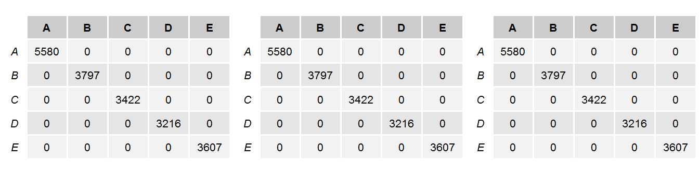

## randomForest 4.6-12## Type rfNews() to see new features/changes/bug fixes.This purpose of this paper is to analyse data gathered from a study that measured various aspects of “Unilateral Dumbbell Biceps Curls”" on six male participants between 20-28 years of age. The following link can be used to access an overview of the original study and the full study can be found here: Qualitative Activity Recognition of Weight Lifting Exercises
This report was created as a project requirement for the Practical Machine Learning course offered by Johns Hopkins University as part of the Data Science Specialization offered through Coarsera.
This report will cover the following items:
Can the manner (correctness) in which Unilateral Dumbbell Biceps Curls was done be predicted using accelerometer data?
The datasets consist of accelerometer data on the belt, forearm and arm of six young healthy participants as well as the dumbell.
The data can be downloaded here:
The first part of model building is data exploration. There are 118 variables in the datasets and it was assumed that some or many of them would provide little or no use. The standard summary() function in R was used to investigate them and it was found that vaiables which included “min_|max_|avg_|var_|stddev_|kurtosis_|skewness_|amplitude_” in the name had large numbers of NA’s or empty cells. Additionally, these variables are summary statistics created by the original authors and were considered to be problematic for any model so they were removed. The variables “new_window|user_name|timestamp|X” were also removed because they would not provide any usefulness in answering the stated question.
The following R commands were used to prune the undesirable variables from the original datasets. To verify if the remaining variables had any additional issues the resulting training set was investigated again with the summary() function and the nearZeroVar() function.
training_smaller <- training[,which( !grepl("X|num_window|min_|max_|avg_|var_|stddev_|kurtosis_|skewness_|amplitude_|new_window|user_name|timestamp",colnames(training) ) ), with=FALSE ]
testing_smaller <- testing[,which( !grepl("X|num_window|min_|max_|avg_|var_|stddev_|kurtosis_|skewness_|amplitude_|new_window|user_name|timestamp",colnames(testing) ) ), with=FALSE ]
# trained models
modFit1 <- train(classe~., method="rf", data = training_smaller, trControl = fitControl)
# with preProcess - center
modFit2 <- train(classe~., method="rf", data = training_smaller, preProcess=c("center"), trControl = fitControl)
# with preProcess - center and scale
modFit3 <- train(classe~., method="rf", data = training_smaller, preProcess=c("center", "scale"), trControl = fitControl)In the snippet above you can see the code for the three models (modFit{1|2|3}) that were trained for evaluation. It was decide to start with the random forest model using the entire training dataset to see what the outcome would be. Along with the base random forest model an additional two models were created that use the preProcess methods of “center” and “center with scale”.
Evaluation of the random forests models were done against the training set to see how well the models perform in predicting the classification. As can be seen in the following output, the tables from the confusionMatrix for each model show that the base model and two subsequent version matched the training set exactly.

The final test was to run the predict function using the base model and the test data. The results from this were entered into the course project prediction quiz for validation. The random forest proved to be an ideal model for this data as it categorized the classifications with 100% accurancy.
With the results of the training data and testing data it is considered that the expected out of sample error is near zero.
The decision to remove the analyst created variables was done to remove sparse data with the hopes that the remaining data would yield good results. However, it was suprising that the model worked as well as it did.
The decision to remove the other variables “new_window|user_name|timestamp|X” was made because it was expected that they would not provide useful information in the model building process. Additionaly, they were not directly tied to the question being asked of the data.
The choice to start with the random Forest model was made because the dataset was not to large to run in a decent amount of time with the addition of parallel processing functions.